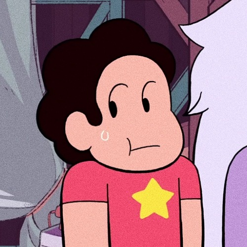

Steven Universo é uma série de desenhos animados que segue a vida de Steven, um garoto com poderes especiais, e suas aventuras junto com suas amigas, enquanto eles protegem a Terra de ameaças misteriosas e aprendem sobre a importância do amor e da amizade. Cada episódio é uma jornada emocionante e cheia de surpresas em um mundo mágico e cheio de personagens fascinantes.
Mais sobre Steven Universo
Homem-Aranha no Aranhaverso

O público é transportado para um universo repleto de dimensões paralelas, onde múltiplos Homens-Aranha de diferentes realidades se unem para enfrentar uma ameaça que coloca todas as suas realidades em perigo. O jovem Miles Morales, o Homem-Aranha de sua própria dimensão, descobre que a responsabilidade de ser um herói é maior do que ele imaginava. Juntamente com Peter Parker e outros Homens-Aranha de universos alternativos, Miles embarca em uma aventura espetacular e cheia de ação, enquanto aprende a dominar seus poderes e a importância de aceitar sua identidade única. Esta animação visualmente deslumbrante é uma homenagem ao legado do Homem-Aranha, repleta de humor, ação e mensagens emocionantes sobre coragem, amadurecimento e trabalho em equipe. "Homem-Aranha no Aranhaverso" é uma montanha-russa de emoções para os fãs de todas as idades.
Mais sobre Homem-Aranha no aranhaverso